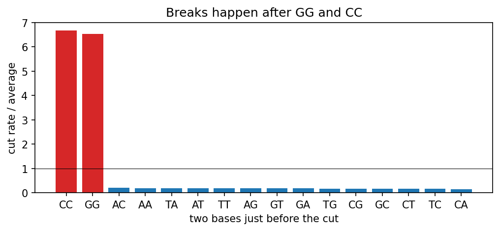

Breaks depend on the two bases before them. Locating reads of known random strands, we compared how often each context appears at a cut with how often it appears at all. After GG or CC the cut rate is ~6× average; everywhere else it is ~0.25× (Fig. 1). The bases to the right of the cut and a third base on the left have no effect, so random strands are chopped at GG/CC sites, giving ~25-base reads and almost no whole-strand reads beyond L = 60. Without GG/CC, breaks are independent. For strands with no GG or CC, the fraction of reads that are the whole strand is 0.75, 0.56, 0.30, 0.13 at L = 30, 60, 120, 200, matching (1−p)L−1 with one p ≈ 0.010. Reads have errors: about 0.6% per base (0.46% substitutions, 0.11% insertions, almost no deletions), so 11% of reads, and 45% of 100-base reads, contain one. About 3% of strands are never read. Of 3,600 strands sent with ~20 reads each, 96 got none. When resent, 89 of 90 lost strands were lost again (two tests) and no kept strand was (0/440), so loss belongs to the sequence. Yet the rate shows no trend with length (1.8–4.4% for L = 40–400 over two runs), GC content, strand ends or any short motif, so we treat it as unpredictable.
Compression (the main lever). With ~2 reads per stored base, coverage is plentiful and score ≈ density, so we compress hard. A small adaptive context-mixing model (byte orders 0–4 and 6 plus a word model, mixed by an online logistic mixer) drives a binary arithmetic coder. The decoder rebuilds the same model as it decodes, so no code table is sent; an end-of-text flag replaces the length header. It reaches ~3.5–4 bits/char, against 4.3 for zlib and ~4.0 for our PPM prototype. Constrained code. Each strand's bits are one integer, mapped by enumerative ranking onto the strings of length L with no GG or CC. This set grows as 3.56L, so we carry 1.83 bits/base: 8.6% less than 2, but breaks fall ~4× and strands of 250–450 bases still get dozens of whole reads. Strand format. [index 8 | number of data strands 8 | payload | CRC-8]. The decoder finds L as the spike in the read-length histogram, clusters whole-strand reads by Hamming distance, takes a per-position majority vote and keeps candidates that pass the CRC. Erasure code. Parity strands from a systematic Cauchy Reed–Solomon code over GF(256) rebuild any r lost strands. Choosing L and r. For each passage the encoder maximises density × P(at most r of n+r strands fail), where a strand fails if lost (3.5%) or if it gets fewer than 8 whole reads (Poisson). Long passages get L ≈ 280–430 with 2–3 parity strands; short ones use 1–3 strands and no parity, since one parity strand would cost 33–100% of density for a ~7% risk.
| Real channel | density | accuracy | score |
|---|---|---|---|
| Starter baseline (sample passage) | 1.44 | 0.92 | 0.87 |
| Ours, 10 passages of 250–4,000 characters | 3.49 | 1.000 | 3.49 |
| Ours, 104 random excerpts of 150–4,000 chars (three runs) | 3.4 | 98/104 exact | 3.30, 2.89, 3.26 |
All six failures were strands lost beyond the parity, in line with what our loss model predicts (5.3 expected in the 80 excerpts where we checked). Capping the risk at 1% would cost more than it saves (expected score for 150-character passages drops from 2.49 to 1.91). Limitations. Short passages compress worst (~4.5 bits/char) because the adaptive model starts empty. We do not use reads shorter than the strand, which would allow longer strands.